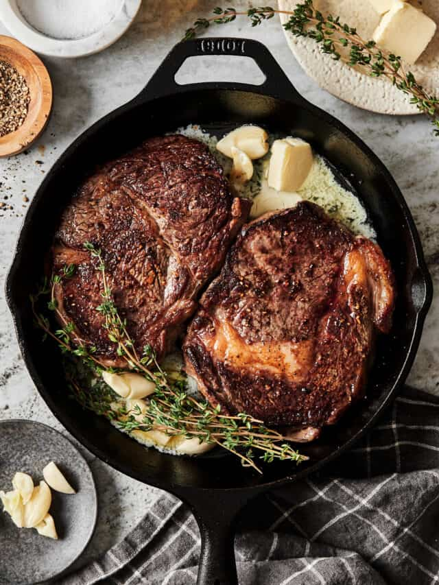

Pan Seared Steak

There are few things as satisfying as a perfectly cooked steak. The crispy exterior, the tender, juicy interior, and the rich, meaty flavor make it a go-to for any special occasion. However, cooking a perfect steak can be quite challenging, even for experienced cooks. There are so many variables to consider, including the cut of meat, the seasoning, and the cooking method, which is why I am so excited to be sharing my tips for Making the PERFECT Pan Seared Steak. With these simple tips, your steaks will turn out juicy and delicious, every time!
Ingredients
- Steak ideally a Rib Eye or New York Strip cut!
- 2-4 Cloves Fresh Garlic mashed
- 4 Tablespoons Butter
- 1 Generous Pinch Sea Salt
- 1 Generous Pinch Black Pepper
Steps
- The first step to making the perfect pan seared steak is to make sure that your steak is room temperature. In order to get that perfect crust / sear, your steak has to be room temperature. If it's cold, it will turn grey and sad!
- The next step is to pat the steak dry with a paper towel, to soak up any extra juices.
- Next is to add a lot of salt. Believe me, you’ll want to use more salt than you think! If you want to add pepper or other seasonings, you can add them at this step. But I recommend sticking to just salt and pepper.
- Next, add your meat thermometer, if using one. I highly recommend it!
- Then, add a high heat oil (like avocado oil) to a pan, on the stove, over high heat. A high heat oil is key to ensuring that the steak cooks properly!
- Wait to add your steak to the pan until the oil glistens or shimmers – that’s how you know it’s hot enough!
- Add your steaks to the hot pan and DO NOT touch them for 3-4 minutes. For a medium rare steak (135 F), flip the steak once the 3-4 minutes are up, and cook for another 3 minutes. For any other steak preparation, refer to your thermometer!
- Once you have flipped your steak, smash 2-4 cloves of fresh garlic and add them to the pan alongside 4 tablespoons of unsalted butter and some sprigs of thyme. Move the pan around and use a spoon to baste the steak with the butter.
- Once done, remove the steak from the heat and let it rest for five minutes. This is very important, to ensure that all of the flavors cook properly!
- Finally, once it’s done resting, transfer your steak to a cutting board and slice it. Pour the rest of the butter from the pan over the steak, and enjoy!